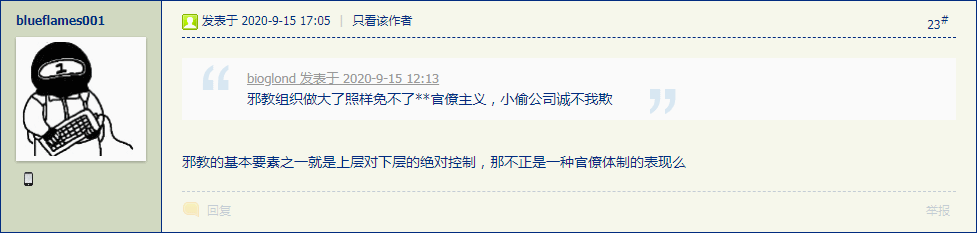
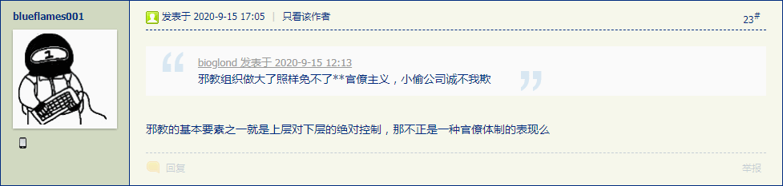

2020-09-16 11:30
洗完澡了精神抖擞容光焕发，上网乱转发现漠北大手情报机构指使的岭南精盎情报掮客在向有关部门举报我的个人博客站点之余，还在「匿名索虏」之上匿名发表三股势力相关重要情报：


虽然各种「架空」讨论都用二战举例，但是一看就知道是为了即将到来的三战之胜利果实打广告，直到出现具体时间点才算穿帮。
与此同时，国际化大都市「华语第一精日论坛」之上出现了一条「新时代墨家」或「走毕达哥拉斯路线的当权派」内部运作的相关爆料：
杰森.贝盖：我加入与退出科学教的经过以及感想 

这个现实组织就是《设定集》当中「走毕派」的原型，在注释中说过了，成立之初还是伟大光荣正确的形象，后来就变成邪教了。在第十六篇设定《皇天后土纸猫刍狗》当中已经出现了背景简介，简单说就是成员两极分化，其中「学霸」负责混进高等院校科研院所诈骗官方预算，而「学渣」则担任地痞流氓混混鸡鸣狗盗之徒于民间非法集资，以及负责「转化科研成果」或曰「套现」。
只不过，《设定集》的年代当中，极少数有资格接触「龙尸」的高层正在不断向民间释放「神迹储备」，于是公开的「科学技术」随之迅猛发展，所以「走毕派」和「希帕索斯会」的共同追求就是距离「龙尸」越近越好，在体制内肯定是削尖脑袋往上钻，这才有「走毕派」或曰「高学历精英社交圈の内野」达成共识打压「希帕索斯会」。
在第十五篇设定《镜花水月梦幻泡影》相关注释当中也提到了，「走毕派」和「希帕索斯会」成员都会挂靠在意识形态观点类似的宗教团体之上，但是成员政治阵营各不相同，于是当然有各种间谍特务卧底互相窃密泄密，渗透到学术、宗教和世俗政权等各个方面，具体到每个人物又是个在三维正交坐标系当中随机游走的轨迹。
而在《异闻录》这边，结合上面两条情报，以及前一阵「科幻文艺衰落」相关情报当中提到「科学技术已经很久没有突破无法指导现实社会甚至连画大饼开空头支票承诺美好未来都做不到了」，可以认为希特勒名言「两周内不能上战场的项目一律下马」的时间点已经到了。
所以2017年初在之江临安「原创文学论坛」连载《设定集》的时候，第四篇《谁说知识就是力量》刚开了个头就被自诩始终代表了最先进生产力的高学历精英搅局于是中断，而在2017年底转进国际一流和谐宜居之都「高学历精英社交圈」之后就遭遇官方推送「民科」「杠精」「反社会人格」以及各路大危鼓吹「没什么自由意志，中央情报局已经钦定了」还有普通帐号频繁骚扰。
再结合最近一段时间爆料，碰瓷「九十九年成大错，称王只合在秦州」的幕后黑手所扶持的新时代钦定主角龙傲天之户口本爹，就是惦记着让「老大」当「学渣」把持黑道而让「老二」当「学霸」混进白道，前者只要24×7全方位骚扰无死角到处拆台扯后腿就可以彻底祸害还能睁大眼睛额头亮晶晶的装蒜兼贵人多忘事假惺惺的说啥「家里也是为你好」，后者则需要抓壮丁担任「游戏代练」。于是看到耍钱的新浪或曰后浪正在奔走相告的情报：
11:31:50【科技部通报9起论文造假等案件查处结果】今天，科技部网站发布通报，披露9起涉及购买论文、违反论文署名规范、套取财政科研资金的违规案件处理结果。相关责任人分别被处以终止承担的国家项目、追回项目资金、停止研究生招生资格、终止或撤销相关荣誉称号、追回科研奖励资金等处罚。9起案件中有7起涉及论文买卖。通报称，案件涉及的论文买卖、代写代投第三方相关线索，科技部将按规定移送有关部门依法严厉打击。
就不用对于市面上炒作的「从小比人聪明还比人努力的神童贵种大少爷」吃香的喝辣的享受青春还能把玩腻歪的肉便器安插到所有「竞争对手」身边负责在毕业升职之类关键时刻粉碎论文资料并嘲笑其「不自量力螳臂挡车的跳梁小丑没有张邦昌的自知之明必将被飒爽登场の李银河美少年以大拇指搓手机驾驶历史の五对负重轮碾为齑粉」并到处得意忘形肆无忌惮的炫耀又有什么畜牲韭菜被「狩猎」之类舆论感到莫名惊诧了。
未完待续